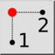

X/Y pisteistä
Työkalurivi / kuvake:


Valikko: Tartunta > X/Y pisteistä
Shortcut: P, X
Komennot: px
Työkalurivi / kuvake:


Tätä tartuntatyökalua voidaan käyttää yhden koordinaatin (esim. X) poimimiseen yhden olemassa olevan kohteen sijainnista ja toisen koordinaatin (esim. Y) toisen objektin sijainnista. Tätä voidaan käyttää esimerkiksi suorakulmion keskipisteen paikantamiseen. Tätä käsitettä kutsutaan myös nimillä 'koordinaattien yhdistäminen', 'pistesuodatus' tai 'koordinaattisuodatus'.